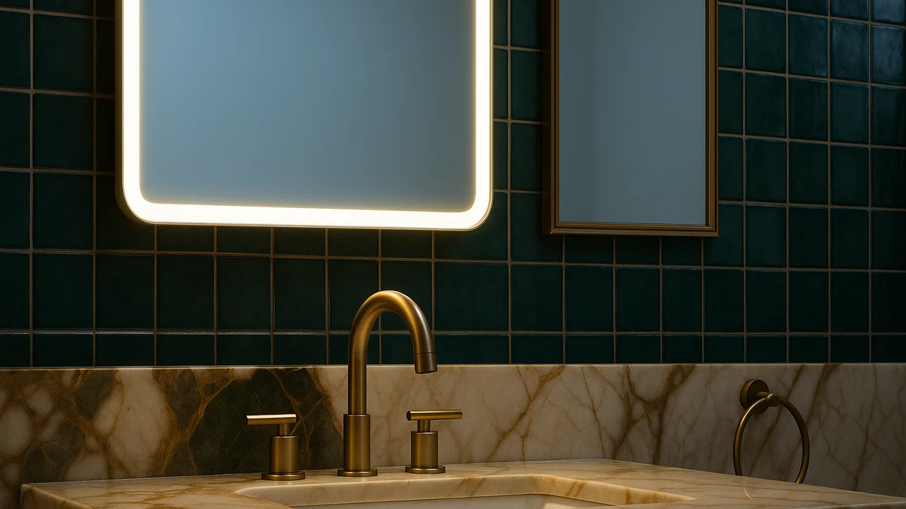

Best Led vs Regular Bathroom Mirror (2026) | Best Bathroom Mirrors


Things to Know Before You Buy
- Lighting is the real difference. An LED mirror puts light at face level and erases shadows, while a regular mirror relies entirely on your existing overhead or sconce lighting.
- Price gap is wide. Plan on $90 to $230 for a quality LED mirror and $35 to $135 for a regular framed mirror or mirrored cabinet of the same size.
- Power matters. An LED mirror needs an outlet nearby or a hardwired connection, so check your wall before you buy. A regular mirror hangs anywhere with two screws.
- Anti-fog is an LED feature. Most LED mirrors include a heating pad that keeps a clear zone after a shower. A regular mirror fogs over until the room cools.
The choice of an LED vs regular bathroom mirror usually comes down to how you use the sink each morning and how much you want to spend. An LED mirror builds the light into the glass, so you see an even, shadow-free reflection no matter how dim the room is. A regular mirror does one job: it reflects whatever light your bathroom already has, and it costs a fraction of the price.
You are not choosing between a good mirror and a bad one. Both reflect your face just fine. The decision hinges on whether you want a lighting upgrade and a modern look, or a simple, reliable surface that never needs an outlet. We compare the build, the price, and what each one is like to live with day to day, so you can match the mirror to your bathroom and your budget.
Quick Answer
For the LED vs regular bathroom mirror question, an LED mirror wins if you apply makeup, shave, or get ready in a bathroom with weak overhead light, since the face-level glow removes shadows and most models add anti-fog. A regular mirror wins if your vanity is already well lit, you want to spend less, or you prefer a framed look you can hang anywhere. Many shoppers pick the LED mirror for a primary bathroom and a regular one for a guest bath.
What is Led?
An LED bathroom mirror is a standard glass mirror with LED strips built into the frame or sealed behind the edges of the glass. Front-lit models, like the 40-by-30-inch MYSUNORIA, run the light around the perimeter so it shines on your face. Backlit models, like the Brightify, hide the strip behind the mirror to cast a halo glow on the wall for a softer, ambient look.
You control these mirrors with a touch sensor on the glass. Most let you dim the light and shift the color temperature from warm white to cool daylight, which matters when you want makeup to read correctly under different lighting. The better mirrors in the LED vs regular bathroom mirror matchup also pack a small heating pad behind the glass that keeps a clear zone after a hot shower.
An LED mirror needs power. Smaller units plug into a nearby outlet, while larger ones often hardwire into the wall circuit. That requirement shapes where you can install one, so you check your wall for an outlet or junction box before you commit to this type.
What is Regular Bathroom Mirror?
A regular bathroom mirror is a sheet of glass with a reflective backing, usually set in a frame or hung frameless. It has no electronics, no cords, and nothing that can break beyond the glass itself. The TEHOME farmhouse mirror with its black metal frame is a good example, and a mirrored medicine cabinet like the VINGLI counts too, since it reflects without any built-in light.
This mirror does one thing and does it well. It bounces back whatever light your bathroom already provides, whether that comes from an overhead fixture, a pair of sconces, or a window. The look depends on the frame you choose, so you can match a farmhouse, modern, or traditional style without thinking about wiring.
In the LED vs regular bathroom mirror comparison, the regular mirror is the simpler, cheaper, and more flexible option for placement. You hang it on any wall with a couple of screws and an anchor, no outlet required. The trade-off is that a regular mirror gives you nothing extra: no face-level light, no anti-fog, and no dimming. It is exactly as bright as your room.
Head-to-Head: Build Quality & Durability
On pure longevity, the regular mirror has the edge in the LED vs regular bathroom mirror build comparison, because it has fewer parts to fail. A framed mirror like the TEHOME has only glass, backing, and a frame. Keep moisture from creeping behind the silvering and it can hang for decades without a single issue. The most common failure on any plain mirror is black edge corrosion, and a quality sealed backing pushes that out many years.
An LED mirror adds a light strip, a driver, a touch sensor, and often a heating pad, and each of those can wear out before the glass does. Reputable makers rate their LED components at roughly 30,000 to 50,000 hours, which translates to many years of normal use, but the driver is the weak point and the part most likely to need replacing. Heavier LED units like the 40-by-60-inch XRAMFY also demand solid wall anchors and two people to hang safely.
Both types use real glass that resists scratches and lasts. The honest takeaway is that a regular mirror is the lower-risk buy for sheer durability, while a well-made LED mirror trades a small amount of long-term reliability for the lighting features you get in return.
Head-to-Head: Price & Value
Price is the clearest split in the LED vs regular bathroom mirror decision. A quality LED mirror runs from about $90 for the 40-by-30-inch MYSUNORIA up to $230 for the oversized XRAMFY. A regular framed mirror or mirrored cabinet of similar size sits between $35 for the VINGLI cabinet and $135 for the TEHOME farmhouse mirror.
That premium buys you the lighting, the dimming, and usually the anti-fog. Add the cost of an electrician if you choose a hardwired LED model and lack an outlet, which can run $100 or more. A regular mirror has no running cost and no install fee beyond a couple of dollars in hardware. If your budget is tight, the regular mirror delivers more reflective surface per dollar every time.
Head-to-Head: Use Experience
Day to day, the LED vs regular bathroom mirror gap shows up most at the sink in the early morning. With an LED mirror, you flip on a light that sits right at face level, so it fills in the shadows under your brow, nose, and chin that an overhead fixture leaves behind. If you apply makeup or shave, that even light makes a visible difference, and the color-temperature control lets you preview how you will look in daylight before you walk out the door.
The anti-fog pad changes the post-shower routine too. You step out, the rest of the glass clouds over, and the heated zone stays clear so you can get straight to work. A regular mirror gives you none of that. You wipe it with a towel or wait for the room to cool, and you live with whatever your ceiling light provides, which often means shadows on your face.
The regular mirror wins on simplicity. There is no touch sensor to clean around and no flicker if the driver ages. Nothing to switch on at all. You glance, you see yourself, you move on. For a guest bathroom or a quick hand-wash check, that plain reliability is often all you want.
When to Choose Led
Choose an LED mirror when your bathroom lighting falls short and you want to fix it at the mirror. If you do detailed grooming, such as makeup, shaving, or skincare, the face-level glow earns its place every morning. An LED mirror also makes sense in a primary bathroom you renovate for resale, since buyers read it as a modern upgrade.
Go LED if anti-fog matters to you, since a heated mirror like the MYSUNORIA stays clear right after a shower with no wiping. Make sure you have an outlet nearby or are ready to hardwire, and pick a size that leaves a few inches of clearance on each side of your vanity. In the LED vs regular bathroom mirror choice, this is the path for people who treat the mirror as a daily tool rather than a plain reflective surface.
When to Choose Regular Bathroom Mirror
Choose a regular mirror when your vanity already has strong lighting from sconces or a bright overhead fixture, since the LED feature adds little in that case. It is also the right call when you want to spend less, outfit a guest bathroom, or hang a mirror on a wall with no outlet. A framed option like the TEHOME lets you lean into a specific style, whether farmhouse or modern, without any wiring.
Pick a regular mirror if you value the lowest-risk, longest-lasting option, because there are no electronics to age out. A mirrored cabinet such as the VINGLI is the smart move when counter clutter is your real problem and you would rather have hidden storage than built-in light. In the LED vs regular bathroom mirror decision, this is the practical, budget-friendly path for most secondary bathrooms.
Our Top Picks
Whichever side of the LED vs regular bathroom mirror question you land on, these three options cover the common needs at the sink. The first is our go-to LED pick, the second a framed regular mirror with strong style, and the third a recessed cabinet for tight spaces.

Editor’s Pick
40"x30" LED Bathroom Mirror with
Our top LED pick. Front lighting, adjustable color temperature, and a built-in anti-fog pad at a fair price for a 40-by-30-inch mirror.
$119.99
Check Price on Amazon
Best Value
TEHOME Farmhouse Black Metal Framed
The best regular mirror here. A black metal farmhouse frame, no electronics to fail, and a classic look for a well-lit vanity.
$135.91
Check Price on Amazon
Premium Choice
TokeShimi 14 x 24 Recessed
Best for small bathrooms. This 14-by-24-inch recessed cabinet hides storage in the wall, reclaiming counter space in a tight powder room.
$116.99
Check Price on AmazonFrequently Asked Questions
Is an LED bathroom mirror worth it over a regular mirror?
Do LED bathroom mirrors need an electrician to install?
Which lasts longer, an LED mirror or a regular mirror?
Do LED mirrors use a lot of electricity?
Can a regular mirror look as good as an LED mirror?
Final Verdict
The LED vs regular bathroom mirror choice comes down to fit, not to which mirror is better on paper. Choose an LED mirror like the MYSUNORIA 40-by-30-inch when you want face-level light, anti-fog, and a modern look in a primary bathroom, and you have power at the wall. Choose a regular mirror like the TEHOME framed model when your vanity is already well lit, your budget is tighter, or you want the simplest, longest-lasting option for a guest bath. Match the mirror to how you use the room, and either one will serve you well for years.